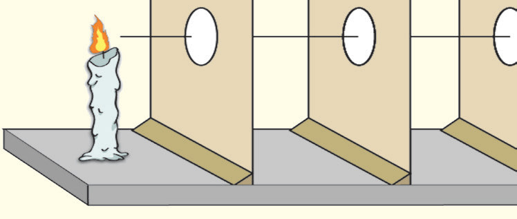
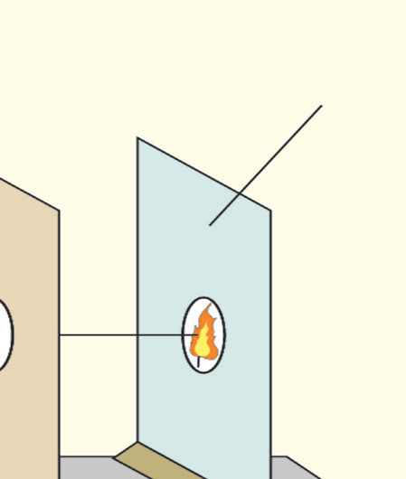

to pass through the hole. Observe the ray of light coming through the hole.
-
3.
If available, sprinkle some dust or flour in the air around the light to make the ray more visible. If it is still difficult to see the ray, a thin cloth or a semitransparent plastic may be used.
-
4.
Remove the cardboard with a single hole and replace it with another cardboard piece that has 3-5 small holes arranged in a cluster.
-
5.
Shine the flashlight through the multiple holes and observe how several rays combine to form a ‘beam’ of light.
Questions
- Focusing on observations in Steps 2 and 5:
-
(a) What insights did you gain from the observations?
-
(b) Highlight the key differences between the two observations.
-
(c) Analyse any patterns in Steps 2 and 5.
-
(d) What relationships can you identify between them?

Procedure
-
1.
Take three square cardboards of equal size. Locate the centre of each piece of cardboard by drawing the diagonals.
-
2.
Using a nail, make a hole at the centre of each cardboard.
-
3.
Fix the three cardboards so that they are upright as seen in Figure 4.1.
-
4.
Arrange the cardboards as A, B and C, one behind the other, so that their centres are in the same horizontal line. You may pass a knitting needle through to confirm that they are in a straight line.

